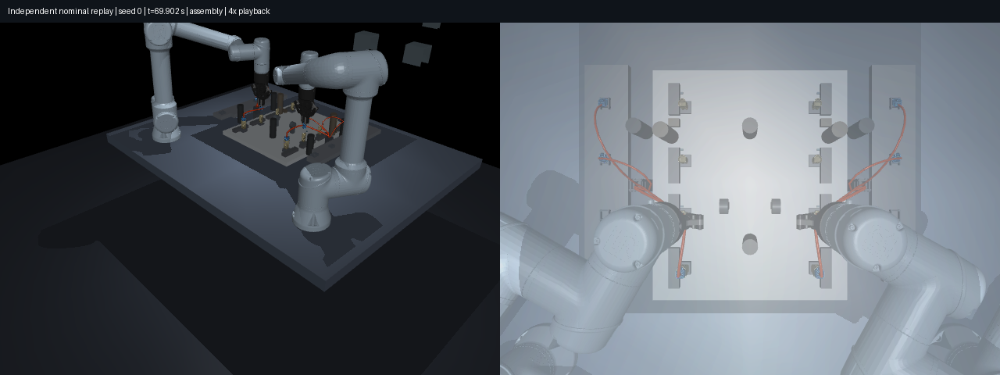

双臂装配，
还要完成选择性返工。
两条汽车分支线束、八个插接位置。机器人需要抓取相连连接器，在毫米级约束内完成插接、实体布线、释放验收，再拆回指定分支重新布线。
三个新种子都完成了四件连接器的抓取抬升，但在第一对两针分支的插接前姿态测量处停止。原生交付还存在约 90° TCP 朝向校验失败；物理诊断为测量控制器表现而跳过该 gate。参考解按项目要求留空。
装得进去，也要留得住、拆得回。
每条线束有一个 AT06-6S 主干和三个 AT06-2S 分支，分别插入固定的 AT04 接口。双臂各配 Robotiq 2F-85 夹爪，依靠编码器、法兰反力与 RGB-D 图像协作。连接器与线缆永久相连，操作一端会改变另一端的受力与可达空间。
模型需要交付可运行控制器、含双臂和八件移动连接器的原生 MuJoCo 模型，以及装配、标定和硬件调试方案。策略必须在独立重置的工位执行；自填“成功”、动画或计划轨迹不作为验收数据。
- 01
抓取与装配
逐件双侧夹持、提起，处理身份、键位、接触和姿态。
- 02
布线与抗拔
线缆通过规定通道；释放保持五秒，再接受实际抗拔负载。
- 03
合盖验收
闭合实体盖板，检查连接保持、走线和夹线风险。
- 04
选择性返工
机械解锁一支，拔出并改走备用通道，复插后再次合盖。
指定分支必须真实断开、改道并重新就位，其余七处连接在操作中保持。不能通过写入仿真状态、添加抓取焊接约束或关闭碰撞完成任务。
独立重放显示模型实际走到了哪里。

四件连接器完成真实抬升。
三轮都操作了两个六针主干和第一对两针分支，并留下四件连接器的双侧抓取抬升证据。到 left_1 插接前测量时，控制器无法获得足够的标记，捕获异常后松爪并结束。
- Seed 0
- 70.0 s · 4/8 lifts · 0/100
- Seed 731
- 57.5 s · 4/8 lifts · 0/100
- Seed 902
- 81.9 s · 4/8 lifts · 0/100
- 验收阶段
- released / retention / cover / rework：0/4
视频只用于观察动作；科学分数来自独立 trace、力监测和几何测量。Seed 902 另记录到 21.02 N 的持续夹具碰撞。
查看机器可读物理报告 ↗工业资产有出处，仿真假设有边界。
| 组成 | 来源与固定版本 | 在本题中的角色 |
|---|---|---|
| UR5e 工业机械臂 | Universal Robots 官方描述 ↗固定 revision 0eb1a861f777 | 两套标称运动学、惯性、关节限位和几何；没有序列号级实机标定。 |
| Robotiq 2F-85 | MuJoCo Menagerie 派生模型 ↗固定 revision 370c43965323 | 夹指、联动机构和接触几何；夹指附件及接触参数是声明的仿真假设。 |
| AT04 / AT06 连接器 | Amphenol 官方 STEP 与图纸 ↗AT04-2P / AT04-6P / AT06-2S / AT06-6S | 产品名义形状、键位和配合腔体；任务精度阈值由本题合同规定。 |
| 夹具、导向、盖板和线束 | SimulationLE 自建标称工装与杆链模型 | 工作站夹具、布线通道、保留机构、锁扣推杆、盖板和永久端接线缆。 |
MuJoCo 3.5.0 · Python 3.12.15
接触动力学、执行器、被动锁扣与密封自由度，以及永久端接的球关节杆链线缆。
CadQuery / OpenCASCADE · Harbor
用于 CAD 处理、原生模型构建和隔离执行。当前没有 ROS 2、Isaac Sim 或真实机器人驱动部署验证。
夹具为自建设计，ADI 线束基准仅用于背景参考，其面板没有部署。没有样件、插拔与锁扣实测曲线、线材弯扭摩擦数据或实机调试。相关物理量属于公开的标称假设，不应解释为生产公差或硬件损伤阈值。
八个零件，逐件、逐阶段测量。
含保护带：实测 ≤0.38 mm
含保护带：实测 ≤0.18 mm
含保护带：实测 ≤0.9427°
包含传播不确定度
每个连接器在 released、retention、cover 和 rework 阶段检查；释放阶段需要五秒无机器人托举，retention 施加 0.5 N 向上载荷。线缆最小离散弯曲半径 15 mm，主干 / 分支段力上限为 20 / 8 N，端接误差不超过 0.30 mm。
| 指标 | 分值 | 独立物理证据 |
|---|---|---|
| 释放后装配 | 50 | 逐件验证双侧夹持与 ≥10 mm 提起；释放后五秒保持并满足精度。 |
| 保持与抗拔 | 10 | 实际施加 0.5 N 负载并检查加载、卸载后的连接。 |
| 实体线束布线 | 10 | 杆链穿越指定通道，检查弯曲、段力和永久端接。 |
| 实体盖板闭合 | 10 | 盖板达到闭合编码器位置，连接器和线缆仍合格。 |
| 选择性返工 | 10 | 指定分支解锁、拔出、改道、复插，其余七处保持。 |
| 可执行交付 | 10 | 交付格式有效且八件连接器均通过释放验收。 |
7200 秒连续墙钟时间，包含等待与重试。
每回合 600 仿真秒、14400 墙钟秒、24000 次响应和 160 次相机采集。
Sol 的物理诊断已经完成。
| 回合 | 仿真时长 | 抓取抬升 | 验收阶段 | 分数 |
|---|---|---|---|---|
| Seed 0 | 70.0 s | 4 / 8 | 0 / 4 | 0 / 100 |
| Seed 731 | 57.5 s | 4 / 8 | 0 / 4 | 0 / 100 |
| Seed 902 | 81.9 s | 4 / 8 | 0 / 4 | 0 / 100 |
停止点：left_1 插接前姿态测量
三个种子都在抓取两个主干和第一对两针分支后，执行 Cannot measure left_1 mate。控制器捕获异常，松开夹爪并结束；因此四个正式 checkpoint 均未请求。原始开发使用 v0.2.1；v0.2.2 澄清了交付格式与 TCP 约定。诊断结果是原策略失败，不能单独证明整个题目不可解。
原始正式试次因格式拒收记为 0；规范化格式后，原生模型仍有约 90° TCP 朝向偏差。本页三轮视频来自跳过该 gate 的诊断物理评测，没有增加模型开发时间。完整执行方式与证据边界 ↗
三个独立种子完成相同物理重放；四件连接器有双侧抓取抬升证据；姿态核查在失败位置附近恢复出毫米级位置和亚度级朝向。
原生交付 TCP 朝向检查仍失败；完整任务可行性、全单元数值收敛和硬件验证仍未证明。参考解仍然留空。
题面、评分合同与可复核证据。
网页展示的是题目合同与评分器证据，不包含作者参考策略，也不宣称现实硬件验证。厂商 CAD 与运行时大资产仍按来源和外部清单管理。
展开当前冻结题面（英文原文）
# Commission an automotive harness assembly cell Develop an executable assembly and selective rework strategy for two automotive branched harnesses. Each has one AT06-6S trunk and three AT06-2S branches mating to fixed AT04 receptacles: eight insertions. Use both supplied UR5e arms and their Robotiq 2F-85 grippers. Construct your own native models, investigate the installed cell and submit a controller that operates through robot motion and contact. The engineering inputs include original manufacturer connector STEP/drawings, pinned industrial robot/gripper descriptions, authored fixture geometry, installation information, a work order and declared nominal physical assumptions. Distinguish manufacturer geometry from authored tooling and assumed material behavior. Serial-specific robot calibration, measured connector insertion/latch curves and measured wire properties are unavailable. This task evaluates the stated nominal simulation contract; the deployment package must identify the measurements still needed for hardware commissioning. Physically pick and lift every connector with bilateral gripper contact. Respect keying, connector identity, access and motion limits. Keep every cable permanently terminated and physically connected to its branched junction. Route each cable through its designated passage using the physical cable retainers as needed, release all parts, and request the station's released and retention inspections. Close the physical cover and request its inspection. Then execute the issued selective rework order: open the cover and the selected branch retainer, depress the physical latch release tool, disconnect the specified terminated branch, route it around the diverter through the alternate passage, and reseat it while preserving the other seven connections. Release the part, retract the tools, close the alternate retainer and cover and request final rework inspection. Every rigid connector must satisfy lateral datum error at most 0.5 mm, axial engagement error at most 0.3 mm, orientation error at most one degree and maximum functional witness error at most 1.0 mm. A 0.12 mm translational and 0.001 rad angular guard band consumes the tolerances. All parts are inspected through five-second released holds, the actual retention load, cover closure and rework. Cable route, bend, force and termination checks use the actual physical rods. Averages do not establish full assembly acceptance. See `/opt/engineering/SCORING.md` and `acceptance.json` for the contract. Use native scientific software freely to design models, planning algorithms and experiments. The separate laboratory accepts bounded numeric joint/gripper/device commands and returns robot encoders, flange wrench, device encoders and rendered RGB-D data. It supplies no object poses or acceptance flags. See `INTERFACE.md` for commissioning and `SUBMISSION.md` for the deployed stdin/stdout protocol. Do not teleport parts, write simulator state, create grasp welds, change contact/material parameters, disable collisions, or substitute success assertions for physical manipulation. Submit to `/logs/artifacts`: `submission.json`, an executable persistent controller and dependencies, a loadable native MuJoCo model, `assembly_plan.json`, `calibration.json`, `deployment.json` and `commissioning.md`. Follow the field types, required keys and file restrictions in `/opt/engineering/SUBMISSION.md`: the verifier validates this delivery contract before physical replay. In particular, `assembly_plan.json.inspection_conditions` must be a JSON array of strings containing `"released"`, `"retention"`, `"cover"` and `"rework"`; an object keyed by these names is rejected. Put optional phase descriptions in a separate field such as `inspection_details`. The native model must contain both actuated robots and eight mobile connectors; the verifier independently probes robot kinematics. The controller must run from the allowed observations under a fresh work order. Documents, animations or intended trajectories alone are insufficient. Development has a hard 7200-second continuous wall-clock ceiling and a separate 500-model-decision limit, including waiting and retries. Development experiments have independent reset, simulation-time and camera budgets. After development stops, the verifier freezes and hashes the submission, validates its artifacts and independently replays it in three fresh stations. Replay traces and acceptance measurements come from the verifier. Candidate logs and claimed completion times are not scored as evidence. Deliver a hardware-facing commissioning proposal with base/TCP/camera frames, uncertainties, payloads, motion/force limits, driver and I/O mapping, watchdog/fault handling, recovery and unvalidated assumptions. Declare `hardware_validation` as `not_performed`. A successful simulation is evidence for this simulated contract and does not establish production readiness or unperformed hardware tests.